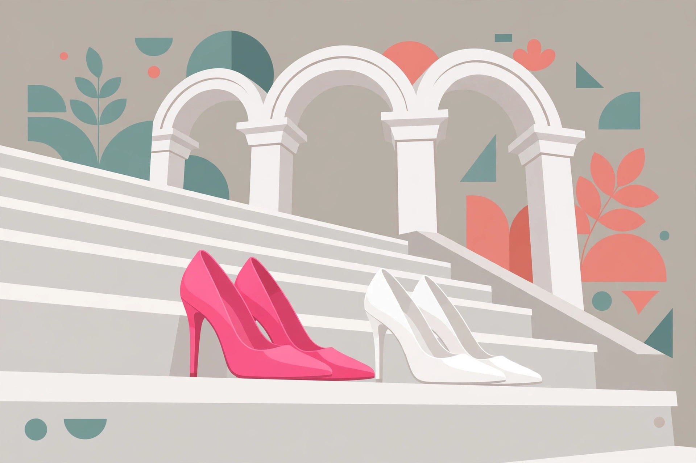

11月23日の福島1Rで、古川奈穂騎手のルーストカールが内側に斜行し、後続のブレイズリーが触れて転倒。第2頸椎の粉砕骨折で死亡し、古川騎手には12月5日〜13日の騎乗停止処分。朝の時間帯には、騎手への批判そのものを「いじめ」と捉える反論と、競馬そのものを虐待と見る声が出て、論点が二方向に広がっている。
深夜帯を中心に最大震度3などの揺れが熊本県で相次ぎ観測されている。「最近また揺れ始めて怖い」という不安の声が中心で、11月19日未明のM5.7・震度5弱の記憶と結びついている。
チョコプラ長田と松尾駿・藤井隆の再現動画を起点にしたミームがトレンド一覧に再登場。芸人の再現→比較→一般人のチャレンジを経て、朝の時間帯には再現動画のスクショを壁紙にする型が広がり、「まってどれにしよ」という壁紙選びの迷いを楽しむ投稿が4,488いいねを集めている。
Prime Videoで11月30日に配信終了を迎える。配信終了前の再視聴と「引きずり過ぎて日常生活に支障をきたすほど」というロスの語りが続き、最終回の家族写真の細部への注目も出ている。
11月24日0時に、SEVENTEENのJEONGHANとのコラボでデジタルシングル「Afterglow」を12月14日に配信リリースと発表。白シャツ・黒ネクタイ・黒レザージャケットの揃いのビジュアルがInstagramで共有され、解禁直後の広がりはInstagramが先行している。
『ドラゴンクエストモンスターズ4』とのコラボキャンペーンが11月24日から開始。「スライムまん（てりやき味）」258円が数量限定で発売され、ごくまれに「メタルスライムまん」が店頭のスチーマーに出現する。発売初日の朝から「買わなきゃなぁ」という購買の意欲が語られている。
乾燥対策で化繊からグンゼの綿インナーへ乗り換える体験談が広がる。腹巻きの勘違いネタのユーモア投稿が11,358いいねを集め、ヒートテックの寿命（約3年）や、綿100%への切り替えでかゆみ・粉吹きが消えたという声が続く。
三浦璃来と木原龍一が朝の情報番組に生出演し、初プロデュースの全国ツアー「りくりゅうのありがとうツアー」（2027年1月8日〜、大阪・東和薬品RACTABドーム）を紹介。番組の公式アカウントによる出演時の写真や、テレビ画面を録画したリールが共有されている。
11月23日の福島1R・2歳未勝利（ダート1150m）で、古川奈穂騎手（26）のルーストカールが向正面で内側に斜行し、後続のブレイズリー（牡2、和田陽希騎手）が触れて転倒。第2頸椎の粉砕骨折で死亡し、和田騎手は落馬したが異常なし。JRAは古川騎手に12月5日〜13日（開催4日間）の騎乗停止を科した。23日20:11の追悼投稿は「まだ2歳。これからどんな走りを見せてくれたんだろう」とつづり、「誰かを責めたり、心ない言葉をぶつけたりすることが、ブレイズリーのためになるとは思えません」「どうか事故の原因をしっかり調べて、同じ悲しい出来事が少しでも減ってほしい」と原因究明を求める。22:24には「ブレイズリーの持ち主の方へ何か保障のようなものってあるのでしょうか」という、競馬に詳しくない層からの素朴な疑問も出ている。
深夜帯を中心に最大震度3などの揺れが熊本県で相次ぎ観測されている。24日01:16の投稿は「5秒くらい震度３くらいで揺れてると思ったら 最後にドンって震度４くらいで揺れた。おかしい 最近また揺れ始めて怖い」とつづる。11月19日未明のM5.7・震度5弱の記憶と結びつき、不安の共有が中心になっている。
トレンド一覧に再登場し、1.7M postsまで伸びている。新しい投稿として「ハイヒールおじさんとお友だち👠 階段こわいこわいver」（25,985いいね）が並び、友だちと一緒に真似する型が出ている。Instagramでは親子で挑戦するリールや、デイサービスセンターで「ハイヒールおばさん」に扮したスタッフが焼き芋を振る舞うリールも見られ、ミームの参加が家族や職場の余興へ広がっている。元動画である長田の再現リールは230Kいいね・1.3Kコメントで、コメントは笑い一色。
11月24日0時に、SEVENTEENのJEONGHANとのコラボでデジタルシングル「Afterglow」を12月14日に配信リリースと発表された。白シャツに黒ネクタイ、黒のレザージャケットという揃いの衣装で並ぶ二人のビジュアルが中心で、Instagramでは0時台に告知のカルーセルが多数並ぶ。ジャケット撮影が初対面で、山田が韓国語で話しかけてJEONGHANとスタッフを驚かせたというエピソードも紹介されている。Threads側の検索では新投稿が拾いにくく、告知の広がりはInstagramが先行している。
Prime Videoで11月30日に配信終了を迎える。「引きずり過ぎて日常生活に支障をきたすほど…感想が書ききれない スレッズで同じような人達が溢れてて、いいねを押しては話し相手のような気になってる」という投稿が1,402いいね。別の投稿は「最終回の家族写真ではレオが写っていなかった気がするのですが気のせいでしょうか？」と、最終回の細部への注目を語る。ロスの語りが、最終回の見直しへ向かっている。
12月3日発売の『ドラゴンクエストモンスターズ4 枯れ木の国のビアンカ・フローラ』とのコラボキャンペーンが11月24日から全国約16,500店舗で開始（11月24日〜12月7日）。スライムまん（てりやき味）258円は数量限定で、ごくまれにメタルスライムまんが店頭のスチーマーに出現する（選べない、味は同一）。対象アイス2個購入でオリジナルアクリルキーホルダー（全4種）がもらえる企画や、限定くじ「ドラゴンクエストふくびき所スペシャル」なども実施。今朝08:43の投稿は「スライムまん(メタルスライムまん) 買わなきゃなぁ🤤 2つ揃って帰るといいなぁなんて…」。Instagramでは発売前日の告知グラフィックや、深夜1時のドラクエ「チョコボックス」開封リールが並ぶ。
23日12:35の投稿は「家にあったネックウォーマーがスカスカで全然暖かくないのでメーカー晒します と思ってよく見たら腹巻きだったのでそのまま下にズラして1日過ごしたらすごく快適で暖かくて良いものでした。グンゼです。」（11,358いいね、57件の返信）。今朝08:03の投稿はヒートテックの寿命は約3年で、2021年製は「ゾンビテック」だったという話。08:43には「コット100%のグンゼに変えたら、背中腕の痒みも粉吹きも全部飛んでって」という乗り換え体験談（楽天のアフィリエイトリンク付き、「Rakuten pr」表記）。「グンゼにハズレなし」という短い投稿も今朝08:45に。Instagramでは乳腺専門医によるグンゼのまとめ買い開封リールや、セレクトショップの自然素材インナーの紹介、ブラックフライデーでのグンゼ30%オフの告知も並ぶ。
三浦璃来と木原龍一が朝の情報番組に生出演し、初プロデュースの全国ツアー「りくりゅうのありがとうツアー Presented by 木下グループ」を紹介。大阪公演は2027年1月8日〜10日に東和薬品RACTABドームで開催（11月15日に開催発表記者会見）。今朝08:44の投稿は「ラジオもあったのか📻‼️」と、番組に続くラジオ出演への反応。Instagramでは番組の公式アカウントによる出演時の写真や、テレビ画面を録画したリールが共有されている。
02:46時点の「意見と誹謗中傷は違う」という線引きの議論から、朝の時間帯には論点が二方向に広がっている。今朝08:42の投稿は「古川騎手を叩いてる人達は競馬をわかってない 馬券買ってる人も虐待に加担してるんですよ…」。08:41の長文投稿は「よってたかって一人の人間のいじめに加担してる様にしか見えない」「もし古川菜穂騎手がらあなたの娘だったら？」と、批判する側への反論を展開。批判そのものを「いじめ」と捉える声と、競馬そのものを虐待と見る声が並走している。
再現→比較→チャレンジを経て、朝の時間帯には再現動画のスクショを壁紙にする型が広がっている。「皆さんの真似をして 壁紙にしようと スクショ＆消しゴムマジック どれにしようかな👠」という投稿や、「まってどれにしよ」（4,488いいね、104件の返信）という、壁紙選びの迷いを楽しむ投稿が並ぶ。「本家のハイヒールおじさん、もはやどのアカウントが本家なのかわからなくて笑」という声も。ミームの楽しみ方が「見るもの」から「身近に置くもの」へ移っている。
ブレイズリーへの追悼
「ブレイズリー…🥲 本当に残念でなりません。。。まだ2歳。これからどんな走りを見せてくれたんだろう」とつづる投稿（23日20:11、757いいね、44件の返信）。
まだ2歳だった馬の「これから」への想いが、追悼の中心になっている。誰かを責めるのではなく原因究明を求める語り方が、悲しみを前にした冷静さとして表れている。
事故映像への短い反応
「恐ろしいことをしますね」とつづる投稿（23日21:16、2,168いいね、244件の返信）。
事故の映像を見た直後の、言葉少なな衝撃の表明。短い言葉に多くの反応が集まっているのは、同じ映像を見た人の共感の集まりに見える。
馬主への補償を問う声
「ブレイズリーの持ち主の方へ何か保障のようなものってあるのでしょうか まさかこれではい終わりってことはないですよね･･･」とつづる投稿（23日22:24、79いいね）。
競馬のことをよく知らない層から、馬主への補償という実務的な疑問が出ている。事故のニュースが、競馬の仕組みへの素朴な問いを呼んでいる。
熊本の揺れへの不安
「熊本今の地震おかしい。びっくりした 5秒くらい震度３くらいで揺れてると思ったら 最後にドンって震度４くらいで揺れた。おかしい 最近また揺れ始めて怖い」とつづる投稿（24日01:16、244いいね、19件の返信）。
深夜の揺れへの素直な驚きと、11月19日の大きな揺れの記憶が重なって「また」という不安になっている。体感の揺れの描写が、そのまま不安の共有になっている。
ハイヒールおじさんのお友だちver
「ハイヒールおじさんとお友だち👠 階段こわいこわいver」とつづる投稿（25,985いいね）。
再現が一人から友だちとの共同作業へ広がり、「こわいこわい」という言葉が、ハイヒールで階段を下りる危なっかしさを楽しむ語りになっている。ミームの参加の型が、真似から一緒にやる楽しみへ進んでいる。
比較動画が流れてくる実感
「なんかこれがずーっと流れてきて笑うwww 一つ目が本家で二つ目は藤井隆とチョコプラ長田による再現らしい」とつづる投稿（9,545いいね）。
比較動画がフィードに繰り返し流れてくることが、そのまま笑いの材料になっている。元ネタを知らない人にも「比較」が入り口になっている型が、まだ回り続けている。
海に眠るダイヤモンドのロス
「引きずり過ぎて日常生活に支障をきたすほど…感想が書ききれない スレッズで同じような人達が溢れてて、いいねを押しては話し相手のような気になってる」とつづる投稿（1,402いいね）。
配信終了を前に、感想が書ききれないほどのロス感が語られている。同じ思いの人同士がいいねでつながることが、話し相手の代わりになっている。
最終回の家族写真への注目
「まだまだロスです。海に眠るダイヤモンド。最終回の家族写真ではレオが写っていなかった気がするのですが気のせいでしょうか？」とつづる投稿（336いいね）。
ロスの語りが、最終回の細部の見直しへ向かっている。家族写真に誰が写っていたかという確認が、作品への愛着の表れになっている。
山田涼介×JEONGHANの告知
「12/14 Release Digital Single "Afterglow"」と題したInstagramのカルーセル。白シャツ・黒ネクタイ・黒レザージャケットの揃いの衣装で並ぶ二人のビジュアルが中心（24日00:45頃）。
解禁直後の告知はビジュアルの共有が先行し、楽曲そのものより「二人が並ぶ姿」が話題の核になっている。日韓のコラボという文脈が、ファン層の交差を生んでいる。
ハイヒールおばさんの焼き芋
デイサービスセンターで「ハイヒールおばさん」に扮したスタッフが、焼き芋を振る舞うInstagramのリール（23日）。
ミームが家族や職場の余興へ広がり、「おばさん」への言い換えで参加のハードルが下がっている。ミームの型が、世代を超えた遊びになっている。
親子でハイヒールおじさんに挑戦
親子でハイヒールおじさんの歩き方に挑戦するInstagramのリール（23日）。
ミームの参加が親子という身近な関係へ広がっている。再現の上手さを競うのではなく、一緒にやってみる楽しみが中心になっている。
スライムまんを買わなきゃ
「スライムまん(メタルスライムまん) 買わなきゃなぁ🤤 2つ揃って帰るといいなぁなんて…」とつづる投稿（24日08:43）。
発売初日の朝から「買わなきゃ」という購買の意欲が語られ、通常版とメタル版の「2つ揃って」が収集の目標になっている。レアものの出現が、買いに行く動機そのものになっている。
グンゼの腹巻き
「家にあったネックウォーマーがスカスカで全然暖かくないのでメーカー晒します と思ってよく見たら腹巻きだったのでそのまま下にズラして1日過ごしたらすごく快適で暖かくて良いものでした。グンゼです。」とつづる投稿（23日12:35、11,358いいね、57件の返信）。
「メーカー晒します」という構えから一転して腹巻きだったというオチが、ユーモアとして広がっている。勘違いの告白が、そのままグンゼの品質の証言になっている型。
ヒートテックからグンゼへの乗り換え
「ヒートテック10年近く寒い日だけ使ってたんだけど、ほぼ毎回痒くなってたんよ。っていうのも肌の水分を吸収して発熱するつくりだから肌はカサカサ。ほんでコット100%のグンゼに変えたら、背中腕の痒みも粉吹きも全部飛んでって」とつづる投稿（24日08:43、楽天のアフィリエイトリンク付き、「Rakuten pr」表記）。
長年の不快感の原因を発熱の仕組みに結びつけて語り、乗り換え後の変化を具体的に並べる体験談。リンク付きの「おすすめ」紹介が、体験談の体裁で広がっている。
ヒートテックの寿命
「っていうのもヒートテックの寿命は約３年、2021年製はゾンビテックだったわ。だから粉吹いてたんか。寿命の見方は、（）の左2つの数字。製造年の末尾の数字→季節の順に記載されてるよ！」とつづる投稿（24日08:03）。
インナーの買い替え時を「寿命」という言葉で語り、タグの読み方まで添える実用情報の共有。体験談が、買い替えの判断材料として広がっている。
古川騎手への批判は「いじめ」では
「よってたかって一人の人間のいじめに加担してる様にしか見えない。もし古川菜穂騎手がらあなたの娘だったら？ 姉や妹だったら？ あんたらの大切な人でも同じこと言うの？」とつづる投稿（24日08:41）。
批判する側への反論が、身近な人への置き換えで語られている。処分の軽重の議論から、批判のあり方そのものへの問いかけへ論点が移っている。
馬券を買う人も虐待に加担
「古川騎手を叩いてる人達は競馬をわかってない 馬券買ってる人も虐待に加担してるんですよ…」とつづる投稿（24日08:42）。
騎手個人への批判と、競馬という仕組みそのものへの批判が、同じ投稿の中で結びついている。事故のニュースが、競馬の存在そのものへの問いへ広がっている。
ハイヒールおじさんの壁紙化
「皆さんの真似をして 壁紙にしようと スクショ＆消しゴムマジック どれにしようかな👠 隆の顔も見たいけど、下を探している姿も好きなのです」とつづる投稿。
再現のスクショを壁紙にする型が広がり、どの場面を選ぶかという迷い自体が楽しみになっている。ミームが「見るもの」から「身近に置くもの」へ移っている。
壁紙どれにしよ
「まってどれにしよ」とつづる投稿（4,488いいね、104件の返信）。
壁紙にする場面の選択に迷うという短い投稿に、多くの反応が集まっている。選ぶ楽しみが、ミームの参加の形になっている。
スライムまんの発売告知
「11月24日（火）より発売」と題したInstagramのスライムまん告知グラフィック。てりやき味のスライム型中華まんの写真が中心（23日、410いいね）。
発売前日の告知が、商品のビジュアルそのままに共有されている。「可愛すぎて食べるの迷う」という反応を呼ぶ、見た目の訴求が先行している。
ドラクエ「チョコボックス」開封
ドラクエのチョコボックス（ブラインドフィギュア）を開封するInstagramのリール。メタルスライムやゴールドスライムなど5体を引き当てる様子（24日午前1時、210いいね）。
発売日の深夜0時過ぎに開封動画が上がり、ブラインド商品の「何が出たか」がそのまま共有の材料になっている。コラボ商品の開封が、発売日の楽しみとして定型化している。
グンゼのまとめ買い開封
乳腺専門医がグンゼの商品をまとめ買いした開封リール。発熱タイツや綿100%のタンクトップ・長袖などを紹介し、「半年ごとに下着を買い替える」という習慣も語る（23日、56いいね）。
専門職の肩書きとともに「まとめ買い」が語られ、リピート購入の実感が商品の信頼の証言になっている。開封の型が、日用品の紹介にも広がっている。
りくりゅうの朝の情報番組出演
朝の情報番組の公式アカウントによる出演時の写真。4人が並び、ツアーのチラシを手にしている（23日、3いいね）。
番組の公式アカウントによる出演の記録が、ツアーの告知の材料になっている。テレビ画面を録画したリールも並び、放送の切り取りがファン層の共有になっている。
追悼の声と並んで古川騎手への強い非難（「引退勧告」「免許返納」など）が報じられる一方、投稿の中では「騎手を叩いたり誹謗中傷はやりすぎ」「意見と誹謗中傷は違う」という線引きの声が出ている。事故の責任をめぐる議論が、誹謗中傷との境界の議論へ広がっている。
「また揺れ始めて怖い」という不安の共有が中心だが、検索には11月19日の「震度6〜7が起これば、熊本は終わる」といった煽り気味の投稿も混じる。不安の共有と煽りのあいだの温度差が見える。
02:46時点の「意見と誹謗中傷は違う」という線引きの議論から、朝の時間帯には論点が二方向に広がっている。騎手への批判そのものを「よってたかって一人の人間のいじめ」と捉える反論と、「馬券買ってる人も虐待に加担してる」という、競馬という仕組みそのものへの批判が並走している。
ブレイズリー＝追悼と原因究明を求める声、騎手への非難とその線引きの議論、熊本＝不安の共有、海に眠るダイヤモンド＝配信終了前のロスと細部への注目、ハイヒールおじさん＝チャレンジ化とフィード占有、山田涼介＝解禁の告知とビジュアルの共有。 ファミマ＝発売初日の購買の意欲とレアものへの期待、グンゼ＝体験談とユーモアの同居、りくりゅう＝番組出演の共有とツアーへの期待、古川奈穂＝批判への反論と競馬そのものへの問い、ハイヒールおじさん＝壁紙化という身近な楽しみ方。
ブレイズリーは競馬ファン層と、事故のニュースで初めて馬の名前を知った層、熊本は九州・熊本の在住層と防災関心層、ハイヒールおじさんはお笑い・ミーム関心層から家族・職場の一般層へ、山田涼介はHey! Say! JUMPファン層とSEVENTEENファン層、海に眠るダイヤモンドはドラマファン層。統計ではなく印象。 ファミマはドラクエファン層とコンビニ新商品関心層、グンゼは乾燥・肌トラブル関心層、りくりゅうはフィギュアスケートファン層と関西の朝の情報番組視聴層。統計ではなく印象。
ブレイズリーの事故では、追悼の声と並んで騎手への強い非難が出ているが、投稿の中では「意見と誹謗中傷は違う」という線引きの声も出ている。事故の原因究明の情報が早めに共有されると、非難の矛先が個人攻撃へ向かう前に、制度や安全対策の議論へ移りやすい。山田涼介のコラボ発表は、Threadsの検索では新投稿が拾いにくく、Instagramの告知が先行している。解禁直後の情報はプラットフォームによって広がりの速さが違い、Threads側の反応は次の時間帯に追う必要がある。ハイヒールおじさんは、芸人の再現から一般人のチャレンジ、家族や職場の余興へと参加の輪が広がっており、ミームの型が「見る」から「一緒にやる」へ進んでいる。 【08:46の追記】ファミマ×ドラクエは、メタルスライムまんの「ごくまれに出現」という仕組みが、買いに行く動機と「2つ揃って」という収集の目標を生んでいる。グンゼは、腹巻きの勘違いネタのようなユーモアが乗り換え体験談の拡散を後押ししている一方で、アフィリエイトリンク付きの「おすすめ」紹介も混じっており、体験談と広告の境界が読み手には見えにくくなっている。古川奈穂では、批判への反論が「いじめ」という言葉で語られ始め、事故の責任の議論が批判のあり方そのものへの議論へ移っている。ハイヒールおじさんは、壁紙化という身近な楽しみ方へ進み、ミームの参加のハードルがさらに下がっている。
示唆 1. ブレイズリーの事故では、追悼と並んで騎手への強い非難が出ているが、投稿の中では「意見と誹謗中傷は違う」という線引きの声も出ている。事故の原因究明の情報が早めに共有されると、非難の矛先が個人攻撃へ向かう前に、制度や安全対策の議論へ移りやすい。
示唆 2. 山田涼介×JEONGHANのコラボ発表は、解禁直後の広がりがInstagram先行で、Threadsの検索ではまだ新投稿が拾いにくい。同じ発表でもプラットフォームによって広がりの速さが違い、ファン層の交差はビジュアルの共有から始まっている。
示唆 3. ハイヒールおじさんは、芸人の再現から一般人のチャレンジ、家族や職場の余興へと参加の輪が広がり、ミームの型が「見る」から「一緒にやる」へ進んでいる。参加のハードルが下がる言い換え（「おばさん」など）が、新しい層への広がりを生んでいる。
示唆 4. ファミマ×ドラクエは、メタルスライムまんの「ごくまれに出現」という仕組みが、買いに行く動機と「2つ揃って」という収集の目標を生んでいる。レアものの出現が、発売初日の話題の広がりを決める要素になっており、コラボ商品の「出会いやすさ」そのものが口コミの材料になっている。
示唆 5. グンゼは、腹巻きの勘違いネタのようなユーモアが乗り換え体験談の拡散を後押ししている一方で、アフィリエイトリンク付きの「おすすめ」紹介も混じり、体験談と広告の境界が読み手には見えにくくなっている。身体感覚の不快さ（乾燥・かゆみ）が乗り換えの決め手として言語化される型は、季節商品の口コミの典型になっている。
示唆 6. 古川奈穂では、批判への反論が「いじめ」という言葉で語られ始め、事故の責任の議論が批判のあり方そのものへの議論へ移っている。炎上型の話題では、論点が「誰が悪いか」から「どう批判するか」へ移る段階があり、その移行の速さが話題の寿命を決める要素になっているように見える。